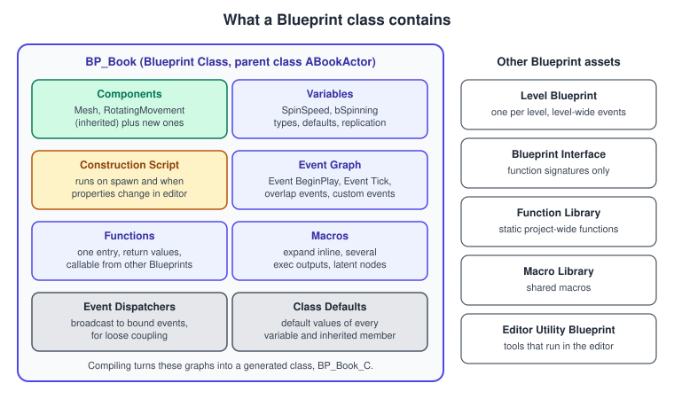
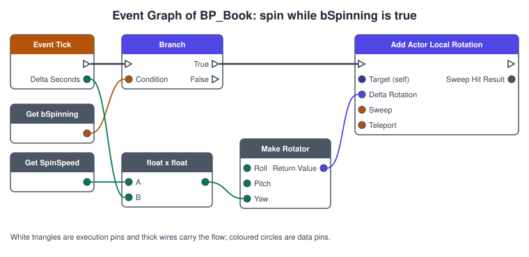
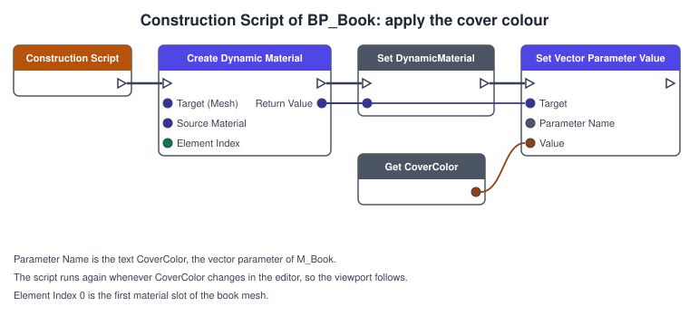
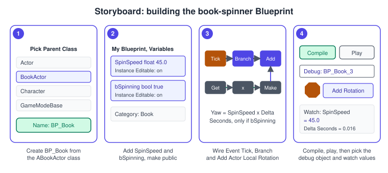

Blueprints Visual Scripting
|
This content was generated with the assistance of AI and should be verified against the official documentation before being relied on in production. |
Blueprints are Unreal Engine’s visual scripting system: gameplay written by connecting nodes with wires in a graph instead of typing code. Epic describes them as a complete gameplay scripting system that uses a node-based interface inside the editor,
and as a way to define object-oriented classes. Programmers can add Blueprint-specific markup in C++ to build base systems that designers then extend, which is how the Bookshelf is made: ABookActor is C++, and BP_Book, derived from it, is a Blueprint.
The facts on this page were checked in November 2026 against the Unreal Engine 5.8 documentation (released on 2026-06-17, latest hotfix found 5.8.4). The Blueprint editor is part of Unreal Editor and is the same on Windows, macOS and Linux; the resulting Blueprints run on every platform the engine builds for.
The page builds the book-spinner: a BP_Book that spins while a flag is on and takes its colour from CoverColor, with the graphs drawn as figures, and the C++ that does the same. It builds on
Actors and Components (the ABookActor class) and UObject, Reflection and Garbage Collection (the specifiers that expose C++ to Blueprints).
How Blueprints talk to each other is on Blueprint Communication, and the line between C++ and Blueprint on C++ and Blueprints Together.
What a Blueprint is

A Blueprint Class is the most common kind. It adds components, variables and logic on top of an existing class, native or Blueprint, and its instances can be placed in levels or spawned. Compiling a Blueprint produces a generated class (BP_Book_C) that the engine treats like any other class,
with its own Class Default Object (see the object page): that is why a Blueprint can be a variable type, a TSubclassOf value or a spawn argument in C++. The other asset kinds Epic lists:
| Asset | Purpose |
|---|---|
Data-only Blueprint |
A Blueprint with no logic that only overrides inherited values, for example a |
Level Blueprint |
One per level, acting as a level-wide event graph. Good for one-off level scripting and prototypes; it cannot be reused or derived from, so gameplay belongs in Blueprint classes. |
Blueprint Interface |
Shared function signatures with no implementation, variables or components, so unrelated classes can answer the same message. Covered on the communication page. |
Function Library, Macro Library |
Static project-wide functions that take inputs and return outputs without storing state, and shared macros. A macro changes graphs only after the Blueprint that contains it is recompiled. |
Editor Utility Blueprint |
Blueprints that run in the editor, to automate asset and level tasks. |
Blueprint or C++? Epic’s best-practices page says Blueprints are best suited to event-driven functionality. Heavy math or many operations per tick can hurt performance more in Blueprints, and for that work it suggests native C++. Gameplay logic, prototyping and tweaking are Blueprint strengths; per-frame, computation-heavy code belongs in C++. Blueprint classes are the reusable option: you can add many copies to any level without duplicating script. The Bookshelf follows the common split: C++ base classes own the data and the hot code; Blueprint subclasses set the meshes, colours and behaviour that designers change.
Source: Blueprint Foundations and Blueprint Best Practices
The Blueprint editor
Double-clicking a Blueprint opens its own editor window. Its main areas:
-
Viewport shows the components and lets you place and transform them (see the procedure on the previous page). Components lists them as a tree; Details shows the settings of the selected component or variable.
-
Event Graph holds the logic that reacts to events; Construction Script is a separate graph tab; functions and macros open their own graph tabs.
-
My Blueprint lists the Blueprint’s graphs, functions, macros, variables and event dispatchers, and is where you create them.
-
Class Defaults shows the default value of every variable, including inherited ones, which is where
BP_BooksetsCoverColorfor all its instances. -
The toolbar has Compile, Save, Play and, while the game runs, the debug controls described below.
-
Compiler Results lists errors and warnings from the last compile.
Right-click on empty graph space to open the node search, which filters by what the selected pin can connect to. Dragging a wire off a pin and releasing it on empty space does the same, a fast way to build chains.
Graphs
| Graph | What it is for |
|---|---|
Construction Script |
Runs after the component list is built, when an instance of the Blueprint Class is created or edited in the viewport. It sets the instance up: choosing meshes and materials, tracing into the world to adapt to the ground. Only Blueprint classes have one; Level Blueprints do not. Every construction graph starts from a ConstructionScript node that is always present. |
Event Graph |
Logic that reacts to events. Any time you think "when this happens, do that", you begin with an event. A Blueprint can have several event graphs, but they only organise the logic into sections and do not change the behaviour. |
Function graph |
A reusable graph with a single entry point, inputs and optional return values. Callable from other graphs in the Blueprint and from other Blueprints; it still runs on the Blueprint that defines it, and child Blueprints can override it. |
Macro graph |
A reusable node layout that expands into the graph where it is used, so it can have several execution outputs and contain latent nodes (those that take time, such as Delay). |
Epic’s rule of thumb: use a macro for a quick bit of logic you reuse everywhere; use a function when child Blueprints might override it or other Blueprints must call it. Functions can have local variables, scratch space limited to the function; class variables hold values you need across functions or from other Blueprints.
Nodes, pins and wires
A node is one operation. Pins are its connection points and wires connect pins. There are two kinds of pin, and the difference is the key to reading a graph.
-
Execution pins (white arrowheads) control the order: a wire from one node’s execution output to another’s execution input says "run this next". Disconnecting an execution wire stops the next node from running, even if its data pins are still connected.
-
Data pins (coloured circles) pass values between nodes, and the colour shows the type. A data wire does not run anything by itself: the node that produces the value is evaluated when something needs it.
-
Events are entry points that fire in response to something happening, such as an actor overlap. An event node has no execution input because it starts on its own.
| Node kind | Notes |
|---|---|
Event |
Starts a chain. Event BeginPlay, Event Tick, Event EndPlay, Event ActorBeginOverlap, Event AnyDamage, and your own Custom Events. |
Function call |
Runs with an execution pin. Pure functions (no execution pin, such as the maths nodes) are evaluated each time their output is read, so the result is not cached; avoid heavy work in them. |
Variable get and set |
A getter has only a data output; a setter has execution pins. |
Flow control |
Branch, Sequence, loops and gates, below. |
Cast |
Cast To BookActor gives a typed reference or takes its failed branch. Hard references and casts are discussed on the communication page. |
Comment |
A coloured box around nodes. Epic recommends comments and colours to mark sections, and turning node sets used more than twice into a function or macro. |
Blueprint number types: the editor shows Float, which has been double precision since Large World Coordinates in UE 5, Integer, Integer64 and Byte. A conversion node is inserted when you connect pins of compatible but different types.
Source: Blueprint Foundations
Variables
A Blueprint variable holds a value (a Boolean, Byte, Integer, Integer64, Float, Name, String, Text, Vector, Rotator or Transform) or a reference to an object. Arrays can be made of any type; Blueprints also have sets and maps. Each type has its own colour in the editor. Variables can be private or public. In the Details panel of a variable:
| Option | Effect |
|---|---|
Instance Editable (the eye icon) |
The value can be edited in the Class Defaults and in the Details panel of every instance placed in a level. Instances can override the default. Other Blueprints can read public variables. |
Expose on Spawn |
The variable appears as an input pin on the Spawn Actor from Class node, so you can set it at the time of spawning. It is the Blueprint form of deferred spawning. |
Blueprint Read Only |
Blueprints can read but not change the variable. |
Expose to Cinematics |
Lets Sequencer drive the value. |
Replication |
Whether the value replicates to clients and, if so, whether a function is called when it changes (RepNotify). See the networking page. |
Transient |
The variable is not serialized and is zero-filled when loaded. |
SaveGame |
The variable is serialized as part of saved game data. |
Category |
Where the variable appears in Class Defaults, the My Blueprint tab and the Details panel. |
The same options exist in C++ as specifiers on UPROPERTY (EditAnywhere, ExposeOnSpawn, BlueprintReadOnly, Replicated, Transient, SaveGame and Category), which is why a C++ base class and a Blueprint subclass can share them.
Source: Blueprint Variables
Flow control
| Node | What it does |
|---|---|
Branch |
Runs the True or False output depending on a Boolean condition. |
Sequence |
Runs its outputs in order, one after another, in the same frame. Use it to do several things from one event. |
DoOnce, DoN |
Lets execution through once, or N times, until reset. Useful for a pickup that must fire a single time. |
Gate, FlipFlop |
A gate that you open and close, and a node that alternates between its two outputs on each call. |
ForLoop, ForEachLoop, WhileLoop |
Loops over an index range, over the elements of an array, or while a condition holds. A WhileLoop whose condition never becomes false stops with an infinite-loop error. |
Switch |
Chooses an output by an integer, string, name or enum value. MultiGate runs one of its outputs per call, in order or at random. |
Delay |
A latent node: execution continues from its output after a time, without blocking the frame. Allowed in the Event Graph and macros, not in functions. |
Timeline |
An asset-like node with float, vector or colour curves that play over time, for animations such as a door opening. Event Graph only. |
Latent nodes do not hold up the game, but they keep a reference to the object, and the pending call is discarded when the object is destroyed.
Source: Flow Control
Events, functions and macros in practice
Events start execution. The engine calls Event BeginPlay when play begins for the actor, Event Tick every frame with Delta Seconds, and Event EndPlay when it ends, exactly as the C++ lifecycle on the previous page. A Custom Event is your own entry point that you can call from anywhere in the Blueprint, or bind to a delegate.
An Event Dispatcher is a list of bound events that you broadcast: the Blueprint form of the multicast delegate used by UBookshelfInventoryComponent.
Functions are the unit of reuse. Give them inputs and outputs, mark them Pure when they change nothing, and set their Access (public, protected or private). A function that is not pure and has no outputs appears with execution pins. A function declared in a C++ parent with BlueprintNativeEvent or BlueprintImplementableEvent can be overridden in the Blueprint, which shows up in the My Blueprint panel’s Override menu.
Macros are inlined, so a macro can have several execution outputs and latent nodes. In the debugger a macro does not appear in the call stack; its nodes show as part of the function that used it.
The book-spinner: building BP_Book
BP_Book derives from ABookActor. ABookActor already spins through its RotatingMovement component, so the Blueprint spinner demonstrates the manual way: it rotates the actor itself in Event Tick, only while a Boolean is on, at a speed you can edit per instance.
The Event Graph

Read the graph in two parts. The execution chain (thick wires) says: every frame, if bSpinning is true, rotate the actor. The data wires say how much: the yaw delta is SpinSpeed degrees per second multiplied by the frame’s Delta Seconds, so the spin speed is the same at 30 and at 144 frames per second.
Multiplying by the delta time is the rule for anything done in a tick.
The same logic in C++, for comparison, is what the engine’s URotatingMovementComponent does for you:
// In ABookActor.h (public):
// UPROPERTY(EditAnywhere, BlueprintReadWrite, Category = "Book")
// bool bSpinning = true;
// UPROPERTY(EditAnywhere, BlueprintReadWrite, Category = "Book")
// float SpinSpeed = 45.0f;
// virtual void Tick(float DeltaSeconds) override;
// In ABookActor.cpp:
void ABookActor::Tick(float DeltaSeconds)
{
Super::Tick(DeltaSeconds);
if (bSpinning)
{
AddActorLocalRotation(FRotator(0.0f, SpinSpeed * DeltaSeconds, 0.0f));
}
}Source: Blueprint Foundations
The C++ constructor on the previous page leaves the tick disabled but possible, so a Blueprint subclass such as BP_Book can turn it on without a code change. The Blueprint route needs no C++ at all.
The Construction Script

The Construction Script runs after the components are built each time an instance is created, and again whenever a property changes in the editor, so the cover colour you type in the Details panel appears at once in the viewport. The graph makes one dynamic material instance from the material in slot 0 and writes the CoverColor variable into the vector parameter with the same name.
It is the Blueprint form of ABookActor::OnConstruction on the previous page. Keep construction scripts light: they run in the editor on every change, and a heavy script makes dragging an actor in the level sluggish.
Procedure

-
In the Content Browser, right-click, choose Blueprint Class, pick
BookActorunder All Classes as the parent, and name the assetBP_Book. Double-click it to open the editor. -
In the Components panel select
RotatingMovementand set Rotation Rate to 0, 0, 0 in Details, so that only the graph turns the book. SelectMeshand set its Static Mesh to the book mesh frombookshelf.glband its material toMI_Book_Leather. -
In My Blueprint, add a variable
SpinSpeedof type Float, tick Instance Editable, set its default to 45, and set Category toBook. AddbSpinning, a Boolean, instance editable, default true. The inheritedCoverColoralready exists. -
Open Class Defaults and under Actor Tick tick Start with Tick Enabled. Without this the tick is off and Event Tick never runs.
-
Open the Event Graph. Add Event Tick, a Branch, and Add Actor Local Rotation. Connect the execution wires as in the figure. Drag
bSpinningin as a getter on the Branch condition. -
Add Get SpinSpeed, a multiply node, and Make Rotator. Connect Delta Seconds and
SpinSpeedto the multiply node, its result to Yaw, and Return Value to Delta Rotation of Add Actor Local Rotation. -
Open the Construction Script and build the graph of the previous figure.
-
Press Compile and fix any error listed in Compiler Results. Save, drag
BP_BookintoL_Library, and setCoverColorper instance in Details. Press Play: the book turns.
Source: Blueprint Foundations, Blueprint Variables and Construction Script
Functions in detail
A function graph starts from a function entry node whose output pins are the function’s inputs, and ends at one or more return nodes whose input pins are its outputs. In the Details panel of a function:
| Setting | Effect |
|---|---|
Inputs and Outputs |
Typed parameters. A function with outputs can be used as a data node; a function without outputs is a plain call with execution pins. |
Pure |
Removes the execution pins. The function is evaluated whenever its output is read, so it should be cheap and must not change state. Const marks a function that does not modify the Blueprint’s variables. |
Access Specifier |
Public, Protected or Private. Public functions can be called from other Blueprints; protected ones only from this Blueprint and its children. |
Category and Keywords |
Where the function appears in the node search, and the words that find it. |
Local variables |
Declared inside the function, created fresh each call, invisible outside. Prefer them to class variables for scratch values. |
Override |
A function inherited from a C++ or Blueprint parent (for example a |
Call In Editor |
Adds a button to the Details panel of an instance that runs the function, the Blueprint form of |
The Bookshelf uses a function for the one piece of logic every book shares: SetSpinning(bool bNewSpinning) sets bSpinning, and also calls Set Actor Tick Enabled so that a book that is not spinning costs no tick. Callers, such as the shelf, never touch the variable or the tick directly; they call the function.
Custom events, dispatchers and timers
A Custom Event has a name and optional inputs and can be called from other graphs of the same Blueprint, or bound to a delegate. The Set Timer by Event node calls a custom event after a delay, once or repeatedly, and returns a Timer Handle for Clear and Invalidate Timer by Handle; it is the node form of the C++ SetTimer call on the previous page.
Use it instead of ticking when something happens every half second.
An Event Dispatcher is a variable-like list of events. Another Blueprint calls Bind Event to OnBookShelved on a reference to the book and supplies a custom event to run; the book calls Call OnBookShelved when it is put back, and every bound event runs. The dispatcher is the Blueprint form of the dynamic multicast delegates declared in C++ with UPROPERTY(BlueprintAssignable)
and DECLARE_DYNAMIC_MULTICAST_DELEGATE. Dispatchers let the book announce itself without knowing who listens, which is the topic of Blueprint Communication.
Arrays, sets, maps and structs
Blueprints have the three standard containers. The pin of a container shows a different shape from a single value.
| Container | Common nodes |
|---|---|
Array |
Add, Add Unique, Get (by index), Length, Find, Contains, Remove Index, Remove Item, Shuffle, and the ForEachLoop flow node. Arrays can hold any type, including object references such as the books on a shelf. |
Set |
Add, Remove, Contains, Length, To Array. Each value appears once; use it to track which books have already been read. |
Map |
Add, Find (returns the value and whether the key existed), Remove, Keys, Values. Use it for lookups such as a title to a book actor. |
A struct groups values under one name. A Blueprint can make its own struct asset, but a struct that C++ code also needs is declared with USTRUCT(BlueprintType), such as FBookStats, and used in both places with the Make and Break nodes. Changing a Blueprint struct asset that other assets already use can cause problems for those assets, so keep shared structs in C++.
Common nodes and their C++ equivalents
| Blueprint node | C++ |
|---|---|
Print String |
|
Branch, Sequence |
|
ForEachLoop |
A range-based |
Delay, Set Timer by Event |
|
Timeline |
|
Cast To BookActor |
|
Spawn Actor from Class |
|
Get Actor Of Class, Get All Actors Of Class |
|
Is Valid |
|
Get Player Controller, Get Player Pawn |
|
Compiling and debugging
Compiling turns the graphs into the generated class. The toolbar shows the status of the Blueprint (up to date, needs compiling, or errors); errors appear in Compiler Results and on the offending node, and a Blueprint with errors cannot run its changed logic. Compile before every Play, because changed macros reach other graphs only after the containing Blueprint is recompiled.
Print String and the Output Log
Print String shows text on screen and writes it to the Output Log. It is the fastest way to confirm that an event fires, and it is cheap, but leave no strings in shipped Blueprints. For C++ the equivalent is UE_LOG with a declared category, as in the earlier examples.
Breakpoints, watches and the Debug Object
The Blueprint Debugger works while the game runs in Play-In-Editor (PIE) or Simulate-In-Editor (SIE), and pauses Blueprint execution so you can inspect graphs and values. Open it from the Tools menu or from the Debug menu of the Blueprint editor.
-
Breakpoint. Right-click a node and choose Add Breakpoint; a red octagon marks it. When execution reaches the node it pauses before running it, the editor jumps to the node, and a large red arrow marks the paused position. You can disable a breakpoint without deleting it and change breakpoints at any time, even mid-session.
-
Watch. Right-click a data pin and choose Watch this value to track the value from its most recent execution. A pin on a node that has not run shows no data. While paused, hovering over a pin shows its current value.
-
Debug Object. A level may contain many instances of one Blueprint. The Debug Object drop-down in the toolbar chooses which instance’s graph the debugger follows, for example
BP_Book_3; if you pick none, the graph may show no live data for the instance you care about. -
Data Flow tab lists instances of a chosen Blueprint class and lets you inspect their properties, expanding arrays, sets and maps. Call Stack shows the chain of executing Blueprint and native functions, current function on top. Execution Trace lists executed nodes, most recent first, and updates as you step.
-
Step controls resume, stop and step through the graph while paused.
Limits worth knowing: debugging works only in PIE and SIE; macros do not appear in the call stack but as part of the calling function; a breakpoint that is invalid for its location shows a yellow warning icon and never triggers (recompiling can fix it); breakpoints are saved in the project’s ini files, so they persist across sessions but are not shared with other developers;
and PrintScriptCallstack() works only in editor builds. From a C++ debugger stopped inside a Blueprint call, PrintScriptCallstack() in the Immediate window prints the Blueprint call stack.
Blueprints and the rest of the project
-
A Blueprint can call any
UFUNCTION(BlueprintCallable)and read anyUPROPERTY(BlueprintReadWrite)of its C++ parent and of the engine; the specifiers are on the object page, and the design of the boundary on C++ and Blueprints Together. -
A Blueprint reaches other Blueprints through references, casts, interfaces and dispatchers; the trade-offs are on Blueprint Communication.
-
A Blueprint used as the game mode or player controller is chosen in the project settings, as on Gameplay Framework.
-
Materials and Niagara systems have their own graph editors with similar nodes and wires, described on Materials and the Material Editor and Niagara VFX.
Common mistakes
-
Event Tick that never fires. The tick is off: enable Start with Tick Enabled in Class Defaults, or in C++ set
bCanEverTickandbStartWithTickEnabled. -
Doing heavy work every tick. Per-frame loops and large array operations are slower in Blueprints than in C++. Use events, timers and Delay instead of polling, and move hot loops to C++.
-
Moving by a fixed amount per tick. The speed then depends on the frame rate. Multiply by Delta Seconds.
-
Casting where an interface or dispatcher would do, which creates hard references that load other assets and couple Blueprints.
-
A giant Event Graph. Use comments and colours, and turn node sets used more than twice into functions or macros, as Epic’s best practices advise.
-
Using a macro where a child needs to override or another Blueprint must call it. Use a function.
-
Reading a pure node’s output many times. It is evaluated every time. Store the value in a local variable.
-
Putting gameplay in the Level Blueprint. It cannot be reused and is hard to find. Use a Blueprint class.
-
Forgetting the Debug Object, then concluding that a breakpoint never triggers.
-
Editing a Blueprint without compiling, so that other graphs still use an old macro.
-
Assuming construction runs once. The Construction Script runs on every property change in the editor, so it must be repeatable and must not spawn actors or accumulate state.
-
Large dependency chains from variable types. Variables of a Blueprint class type load that class with the owner; use the C++ base class as the type where possible.
Performance notes
-
Blueprints run in a virtual machine, so each node costs more than the equivalent C++. For event-driven code the difference does not matter; for loops over many elements, per-frame maths and anything called thousands of times, it does. Profile first, then move only the hot function to C++.
-
Turn the tick off by default. A Blueprint with an enabled tick costs time every frame for every instance.
-
Avoid long chains of pure nodes feeding several consumers; each consumer re-runs the chain.
-
Hard references from Blueprints decide what loads together. The Reference Viewer and Size Map tools of the Content Browser show these chains, and soft references break them, see Data-Driven Gameplay.
-
Keep Construction Scripts cheap, since they run in the editor on each change and in cooked builds on each spawn of the instance.
-
Profile Blueprint cost with
stat gameand Unreal Insights, covered on Profiling and Optimization.
Source: Blueprint Best Practices
What changed recently
| Version | Change |
|---|---|
UE 5 |
Blueprint Float pins are double precision (Large World Coordinates). |
UE 5.8 (June 2026) |
Incremental Cooking (beta) works across native engine assets, including Blueprints. Audio Subtitles (beta) adds a |
UE 6 (announced June 2026) |
Epic’s State of Unreal announcement says Unreal Engine 6 merges Unreal Engine 5 and UEFN into one editor built around Verse, and that Blueprints remain supported through Early Access and the initial releases. Epic targets Early Access for the end of 2027. See Verse, UEFN and UE6 Context. |
Source: Unreal Engine 5.8 Release Notes and State of Unreal 2026
Where the books are outdated
The books that teach Blueprint basics are Blueprints Visual Scripting for Unreal Engine by Marcos Romero and Brenden Sewell (BPV, 2nd edition, UE 4.20 to 4.22, chapters 1, 2 and 13), Learning Unreal Engine Android Game Development by Nitish Misra (MIS, UE 4.4 to 4.7, chapter 5), Unreal Engine 4.X By Example by Benjamin Carnall (CAR, UE 4.10 and 4.11, chapters 2 and 3) and Unreal Engine: Game Development from A to Z by Joanna Lee, John P. Doran and Nitish Misra (ATZ, a learning path of three books for UE 4.7 to 4.10, module 2 chapter 8).
| Book | Era | What is current in UE 5.8 |
|---|---|---|
BPV ch. 1, 2 and 13 |
UE 4.20 to 4.22 (2019) |
The graph model (events, variables, functions, macros, flow control) is the same. The editor’s layout and some node names have changed since, so use the names on this page. Float pins are double precision in UE 5. |
MIS ch. 5 |
UE 4.4 to 4.7 (2015) |
Blueprint concepts hold, but the screenshots, the Content Browser, the Details panel and the compile workflow are those of early UE4. Today reusable gameplay goes into Blueprint classes rather than the Level Blueprint. |
CAR ch. 2 and 3 |
UE 4.10 and 4.11 (2016) |
The same graph model with a much older editor. Where a Blueprint in the book reads input through the legacy action and axis events, use Enhanced Input, see Enhanced Input. |
ATZ module 2 ch. 8 |
UE 4.7 to 4.10 |
The same remark. Anything that relies on Matinee or Cascade has been replaced by Sequencer and Niagara. |
See also
-
Entity Component System: a data-oriented alternative to per-actor scripts.
-
Game Loop and Frame Timing: why per-tick movement is multiplied by the delta time.
-
Scene Graphs and Asset Formats: the scene model behind levels and Blueprint instances.
-
Actors and Components: the lifecycle events that Event BeginPlay and Event Tick map to.
-
UObject, Reflection and Garbage Collection: the specifiers that expose C++ to Blueprints.
-
Gameplay Framework: Blueprint game modes and controllers.
-
Blueprint Communication: references, casts, interfaces and dispatchers.
-
C++ and Blueprints Together: choosing between the two.
-
Data-Driven Gameplay: data assets and soft references.
-
Materials and the Material Editor: another node graph.
-
Unity Prefabs and Scenes: the prefab is the nearest Unity counterpart of a Blueprint class.
-
Unity scripting and the MonoBehaviour lifecycle: the Unity counterpart of the lifecycle events used here.